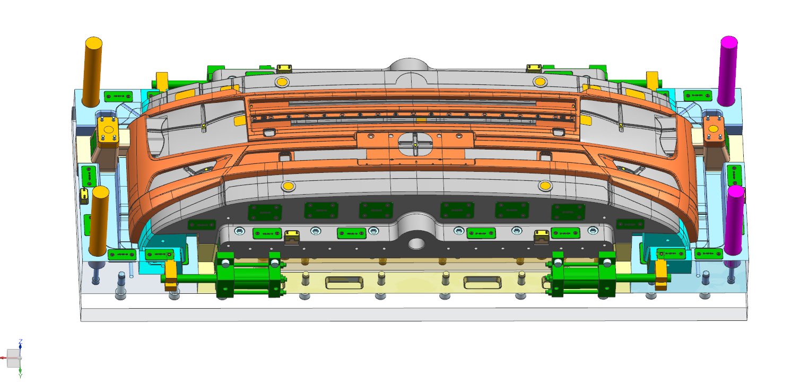
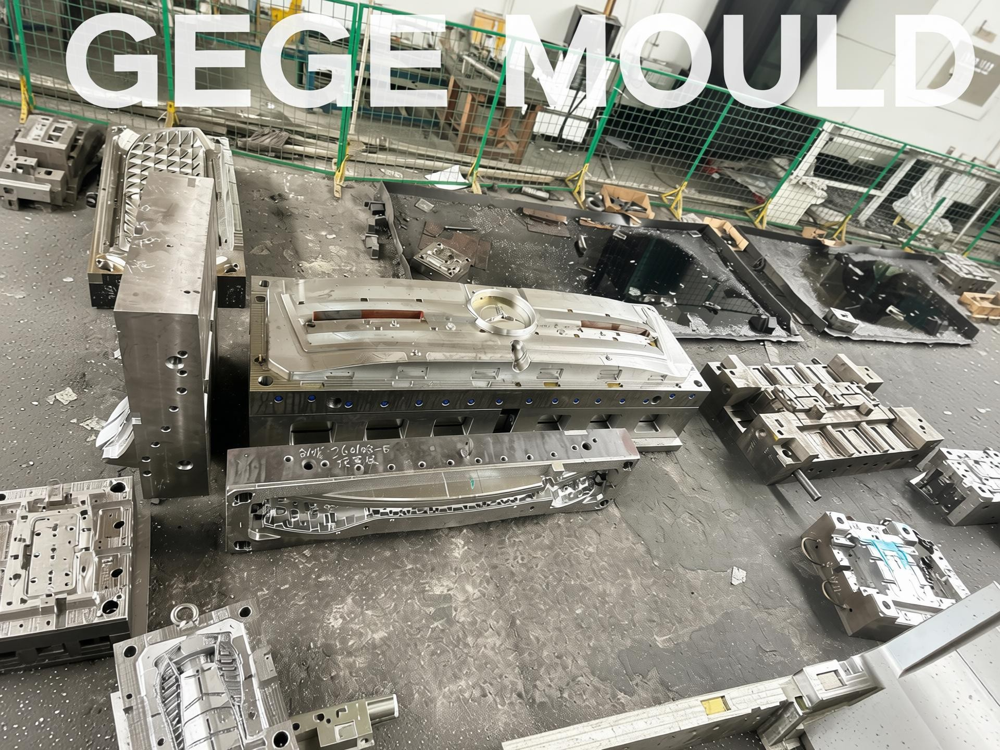

Real injection mold and molding projects — our engineering approach, the challenges we solved, and the production outcomes delivered.
The following project examples are illustrative of Gege Mould typical work across our key industries. Specific client names have been withheld for confidentiality. Contact our team to discuss similar projects matching your requirements.
Automotive — Export Program
Azmir Md Al, Export Manager — Gege Mould
8-Mold Lighting Program: Door-to-Door Export to a European Tier 1
A European Tier 1 automotive lighting supplier needed 8 injection molds across 4 part numbers — delivered, installed, and PPAP-signed within 16 weeks after their previous supplier fell 7 weeks behind schedule.
Challenge
Customer needed 8 injection molds across 4 part numbers delivered to their European facility within a 16-week window — with staggered PPAP, split shipments, and on-site installation support. Previous supplier had fallen 7 weeks behind.
Solution
Parallel engineering streams, incremental PPAP documentation built alongside the mold build, CIF door-to-door logistics with 48-hour tracking updates, and on-site export management presence during both installation phases.
Outcome
All 8 molds delivered on schedule across two batches. Zero dimensional non-conformances at first-article inspection. Full PPAP Level 3 signed off before each shipment. Customer ordered 3 additional programs within 12 months.
Heavy-Duty Truck Door Panel Mold — Multi-Cavity Hot-Runner System
A European Tier 1 supplier urgently needed a 2-cavity door panel mold for a next-generation heavy-duty truck platform — 1,100 × 750 mm part with Class-A grained surface across the entire visible face, delivered in 18 weeks.
Challenge
Customer needed a 2-cavity door panel mold for a next-generation heavy-duty truck platform. Aggressive 18-week lead time with Class-A grained surface finish required on all visible faces.
Solution
Full DFM analysis identified gate position issues before steel was cut. Hot-runner system with sequential valve gating eliminated weld lines on visible surfaces. Pre-hardened 718H steel selected for 500,000+ shot service life.
Outcome
T1 samples approved with zero dimensional deviations. Mold delivered in 16 weeks — two weeks ahead of schedule. Running production with consistent cycle time under 45 seconds.
Project Background
A European Tier 1 supplier to a major heavy-duty truck OEM approached Gege Mould with an urgent requirement: a 2-cavity injection mold for a next-generation door inner panel. The part measured approximately 1,100 × 750 mm — significantly larger than a typical passenger vehicle door panel — with a Class-A grained surface finish required across the entire visible face. The existing supplier had failed to meet quality thresholds after multiple sampling rounds, and the customer was facing a production line shutdown if tooling wasn't delivered within 18 weeks.
Engineering Approach
Gege Mould's engineering team began with a comprehensive DFM (Design for Manufacturing) analysis of the customer's part model. Moldflow simulation revealed that the original gate locations specified by the previous supplier would create visible weld lines on the primary styling surface. Our team repositioned the gates along the belt-line — a natural visual break in the part — using sequential valve gating to ensure melt fronts met precisely at the parting line rather than on an exposed surface. Pre-hardened 718H tool steel was selected for both cavity and core, providing sufficient hardness for the 500,000+ shot service life target without the lead-time penalty of full hardening. All grained surfaces — including shut-offs and parting lines — were machined to the same grain specification so no visible transition would appear on the finished part.
Results
T1 samples approved with zero dimensional deviations — first-shot approval at the customer's European molding facility
Mold delivered in 16 weeks — two full weeks ahead of the 18-week schedule commitment
Running serial production with consistent cycle time under 45 seconds per shot
Customer has since awarded Gege Mould three additional door panel mold programs across their heavy-duty truck platform range

Automotive
Azmir Md Al, Export Manager — Gege Mould
Front Bumper Mold for European Passenger Vehicle Platform
A European OEM needed a replacement injection mold supplier for their facelift front bumper program — large-format tooling with complex undercuts, full PPAP Level 3, and Cpk ≥ 1.67 on all critical dimensions.
Challenge
Large-format front bumper mold with complex undercuts for parking sensor housings and trim attachments. Customer required full PPAP Level 3 documentation and Cpk ≥ 1.67 on all critical dimensions.
Solution
Four-side slide mechanism for undercut release across the full fascia width. Mold flow simulation optimized fill pattern and balanced cavity pressure. Complete PPAP package including PFMEA, control plan, MSA, and process capability study.
Outcome
First-shot approval at OEM European production facility. Full PPAP sign-off within three weeks of T1 delivery. Mold now in serial production.
Project Background
A European OEM required a replacement injection mold supplier for their facelift front bumper program. The existing tooling was approaching end-of-life and producing parts with increasing dimensional variation. The OEM required a complete new mold — not a refurbishment — with full PPAP Level 3 documentation, Cpk ≥ 1.67 on all critical-to-quality dimensions, and first-article delivery within 14 weeks. The bumper fascia incorporated parking sensor housings, lower grille attachment points, and multiple trim clip features — all requiring undercut release mechanisms.
Engineering Approach
Gege Mould's team designed a four-side slide mechanism synchronized with the mold opening sequence to release all undercut features — parking sensor recesses on the front face, trim clip slots on the inner returns, and lower grille mounting tabs on the bottom edge — without secondary operations. Moldflow simulation was run through five iterations to optimize gate locations for balanced fill across the full 1,750 mm fascia width, ensuring consistent cavity pressure at the extremities and eliminating the risk of short shots or sink marks at the thick-to-thin transitions. The mold base was engineered for mounting on the customer's specified 2,200-ton press with guided ejection to prevent deflection. The complete PPAP package — PFMEA addressing 47 potential failure modes, control plan with 89 inspection points, MSA studies on all measurement systems, and capability analysis demonstrating Cpk values between 1.72 and 2.14 across all critical dimensions — was built incrementally throughout the tool build, not compiled after the fact.
Results
First-shot approval at the OEM's European production facility — all critical dimensions within tolerance
Full PPAP Level 3 sign-off achieved within three weeks of T1 sample delivery
Cpk values confirmed between 1.72 and 2.14 across all 23 critical-to-quality dimensions
Mold entered serial production on schedule and has since completed 180,000+ cycles
OEM has engaged Gege Mould for rear bumper and rocker panel mold programs on the same vehicle platform
A Tier 1 HVAC supplier needed an injection mold for a blower motor housing in glass-fiber-reinforced PP — deep internal volute geometry with severe undercuts, 150,000 units annually, and aggressive tool-wear conditions.
Challenge
Glass-fiber-reinforced polypropylene presenting elevated tool wear risk. Complex internal geometry with deep undercuts requiring collapsible core design. Annual production volume of 150,000 units.
Solution
H13 tool steel with nitrided cavity surfaces for long-term abrasion resistance. Collapsible core mechanism eliminated secondary machining operations. Conformal cooling channels engineered for thermal uniformity across the complex core geometry.
Outcome
Tool reached 200,000 shots without measurable wear at first scheduled preventive maintenance inspection. Per-part production cost reduced significantly versus customer previous supplier tooling.
Project Background
A Tier 1 HVAC systems supplier approached Gege Mould seeking a more cost-competitive tooling source for a blower motor housing mold. The part was molded in PP-GF30 — a glass-fiber-reinforced polypropylene known for elevated abrasiveness that accelerates cavity wear in non-optimized tool steels. The housing featured complex internal geometry with deep undercuts for air-flow guide vanes and snap-fit assembly features, all of which traditionally required secondary CNC machining after molding. The customer's production schedule demanded 150,000 units annually with consistent dimensional quality across the full production run.
Engineering Approach
Recognizing the abrasion challenge of 30% glass-fiber-filled PP, Gege Mould specified H13 hot-work tool steel for both cavity and core — significantly more wear-resistant than the P20 previously used by the customer's incumbent supplier. All cavity surfaces received a nitriding treatment to further harden the surface layer against glass-fiber erosion. The most significant engineering contribution was a collapsible core mechanism that formed all internal undercut features in the mold — eliminating three secondary machining operations and reducing per-part cycle time by approximately 22%. Conformal cooling channels, designed using thermal FEA simulation, followed the complex core geometry at a consistent 8–10 mm standoff distance, ensuring uniform cavity temperature and minimizing warpage risk in the semi-crystalline PP material.
Results
Tool reached 200,000 shots at first scheduled preventive maintenance inspection with no measurable cavity wear — confirming H13 + nitriding material selection
Collapsible core eliminated three secondary machining operations, reducing total per-part production cost by approximately 18% versus the customer's previous supplier
Conformal cooling reduced cycle time by 12% compared to conventional straight-drilled cooling in the same part geometry
Customer consolidated three additional HVAC component molds to Gege Mould within 18 months of this program's launch
Automotive — Heavy-Duty Truck
Azmir Md Al, Export Manager — Gege Mould
SMC Compression Mold for Truck Exterior Panel — Large Format
A heavy-duty truck manufacturer needed a large-format SMC compression mold for a 920 × 680 mm exterior body panel — requiring uniform 180°C cavity temperature and dimensional stability under 1,200-ton press force.
Challenge
Sheet molding compound tool requiring uniform 180°C cavity temperature across a 920 × 680 mm surface area. Dimensional stability critical under 1,200-ton press clamp force for a heavy-duty truck exterior body panel application.
Solution
P20 tool steel with hardened inserts at high-wear shear edges. Optimized heating channel layout achieving consistent cavity surface temperature distribution. Reinforced mold base with guided ejection to prevent deflection under full clamp tonnage.
Outcome
First-article dimensions within 0.08 mm of nominal across all inspection points. Tool completed 50,000 production cycles with no rework required. Customer subsequently ordered additional truck panel tooling from Gege Mould.
Project Background
A manufacturer of heavy-duty truck exterior components needed a large-format SMC (Sheet Molding Compound) compression mold for a next-generation exterior body panel. The part measured 920 × 680 mm — among the largest SMC panels in the customer's product range — requiring uniform 180°C cavity surface temperature across the entire molding surface. Dimensional stability was critical under 1,200-ton press clamp force, as even minor deflection in the mold base would translate directly to out-of-tolerance part dimensions. The customer's previous SMC tooling supplier had struggled with inconsistent heating, resulting in cure variation and unacceptable warpage rates on production parts.
Engineering Approach
Gege Mould engineered the mold using P20 tool steel as the primary material, with hardened H13 inserts at all high-wear shear edges where the SMC material flow would create the most abrasive conditions during compression. The heating channel layout was designed using thermal FEA to achieve a consistent 180°C ±3°C across the entire 920 × 680 mm molding surface — critical for uniform SMC curing and to prevent the warpage issues that had plagued the previous supplier's tool. An optimized circuit routing with balanced flow ensured no cold spots at the cavity extremities. The mold base was structurally reinforced with additional support pillars and a guided ejection system to resist deflection under the full 1,200-ton clamp force, maintaining parallelism between the moving and fixed halves throughout the compression cycle.
Results
First-article dimensional inspection showed all measurement points within 0.08 mm of CAD nominal — well within the customer's 0.15 mm tolerance band
Tool completed 50,000 production cycles with no rework or insert replacement required — confirming P20 + hardened insert material strategy
Warpage rate on production parts reduced to under 0.3%, compared to 4.2% with the previous supplier's tooling — directly attributed to uniform thermal control
Customer subsequently ordered additional SMC panel tooling programs from Gege Mould, consolidating their compression mold supply base

Automotive — OEM Program
Azmir Md Al, Export Manager — Gege Mould
Mercedes-Benz Component Mold — Completed Tool Delivery to European OEM
A Mercedes-Benz Tier 1 supplier required a precision injection mold for a visible interior component — Class-A SPI A1 surface finish, ±0.05 mm tolerances, full PPAP Level 3, and facility audit before tool steel could be ordered.
Challenge
Precision injection mold for a Mercedes-Benz passenger vehicle component requiring Class-A surface finish, tight dimensional tolerances, and full PPAP Level 3 documentation. OEM audit of manufacturing facility required before tool approval.
Solution
S136 hardened steel construction with SPI A1 mirror-polished cavity surfaces. Hot-runner system with sequential valve gating for optimal surface quality. Complete in-house tryout with production-grade material. Full PPAP documentation package prepared and delivered with the tool.
Outcome
First-shot approval at customer European molding facility. Zero dimensional non-conformances. Tool entered serial production on schedule. Customer has since awarded Gege Mould additional Mercedes-Benz component mold programs.
Project Background
A Mercedes-Benz Tier 1 supplier required a precision injection mold for a visible interior component on a current-generation passenger vehicle platform. The part specification demanded Class-A surface finish on all visible faces, dimensional tolerances of ±0.05 mm on critical mounting features, and full PPAP Level 3 documentation. Uniquely, the OEM required an on-site audit of Gege Mould's manufacturing facility before tool steel could be ordered — a qualification gate that the previous supplier had failed, causing a 10-week program delay before Gege Mould was engaged.
Engineering Approach
Gege Mould passed the OEM's facility audit on the first attempt — the auditor specifically noted the organized workflow from incoming material inspection through final tool assembly, the calibrated CMM lab with traceable measurement standards, and the documented quality management system under ISO 9001. For the mold itself, S136 hardened stainless tool steel was selected for the cavity and core — providing the corrosion resistance necessary for the specified material and the polishability required for SPI A1 mirror finish on all visible surfaces. A hot-runner system with sequential valve gating was engineered to eliminate gate vestige on Class-A surfaces and ensure optimal melt front convergence. The complete in-house tryout was conducted with the customer's production-grade material, not a surrogate, so T1 samples represented true production conditions. The PPAP Level 3 documentation package — including PFMEA with 62 potential failure modes, a control plan with 104 inspection characteristics, complete MSA studies, and initial process capability demonstrating Cpk ≥ 1.67 on all critical dimensions — was compiled incrementally throughout the tool build and reviewed with the customer at each project milestone.
Results
First-shot approval at the customer's European molding facility — all 104 inspection characteristics within specification
Zero dimensional non-conformances at PPAP submission — a first for this component program across three previous tooling suppliers
Tool entered serial production on the customer's original timeline, recovering the 10-week delay caused by the previous supplier's audit failure
Customer has since awarded Gege Mould additional Mercedes-Benz component mold programs across multiple vehicle platforms
Ready to Source Your Next Automotive Mold Program?
48-hour RFQ response·ISO 9001 certified·Serving 30+ countries
Send us your part drawing or CAD file. Our engineering team will review your requirements, match them against our project portfolio, and respond with a detailed assessment — not a template quote.